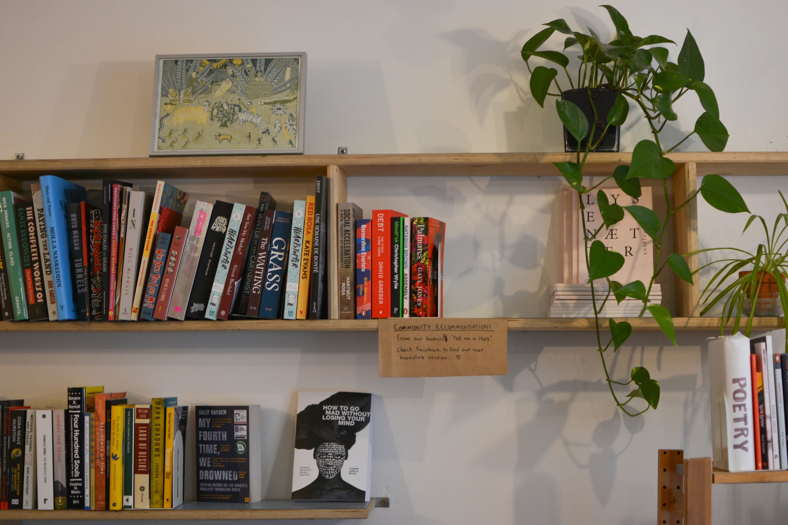
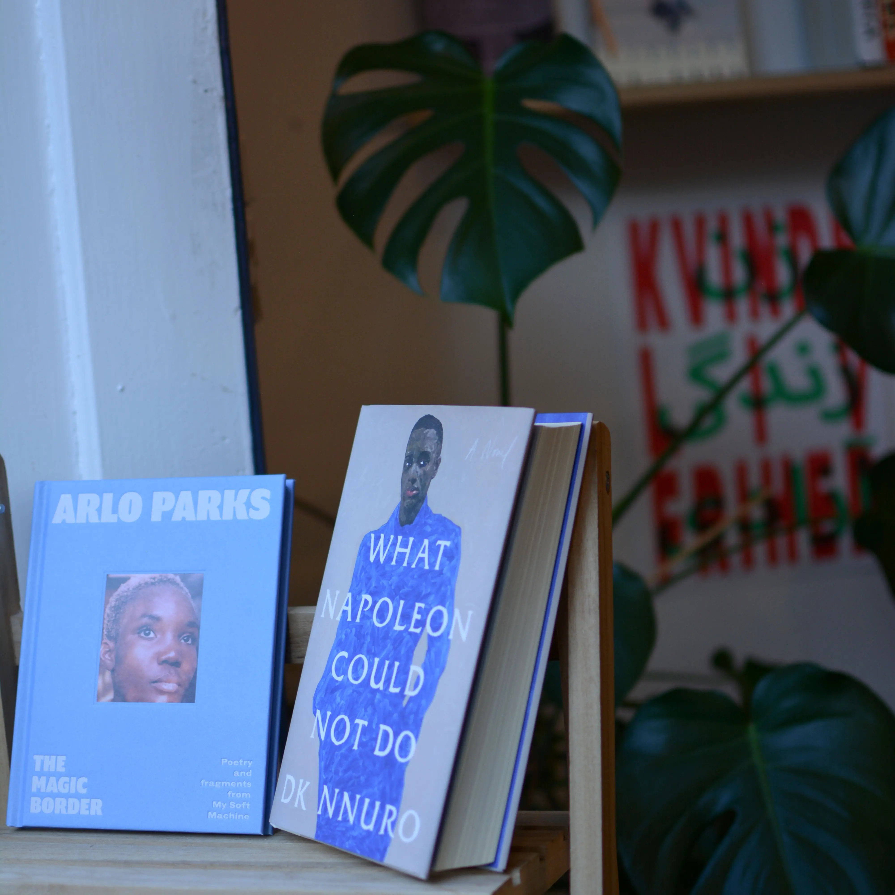
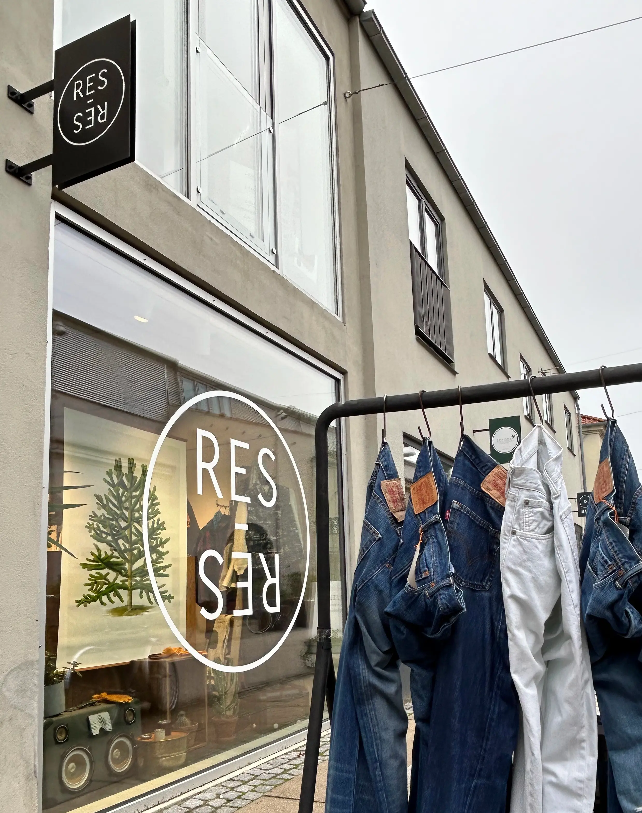
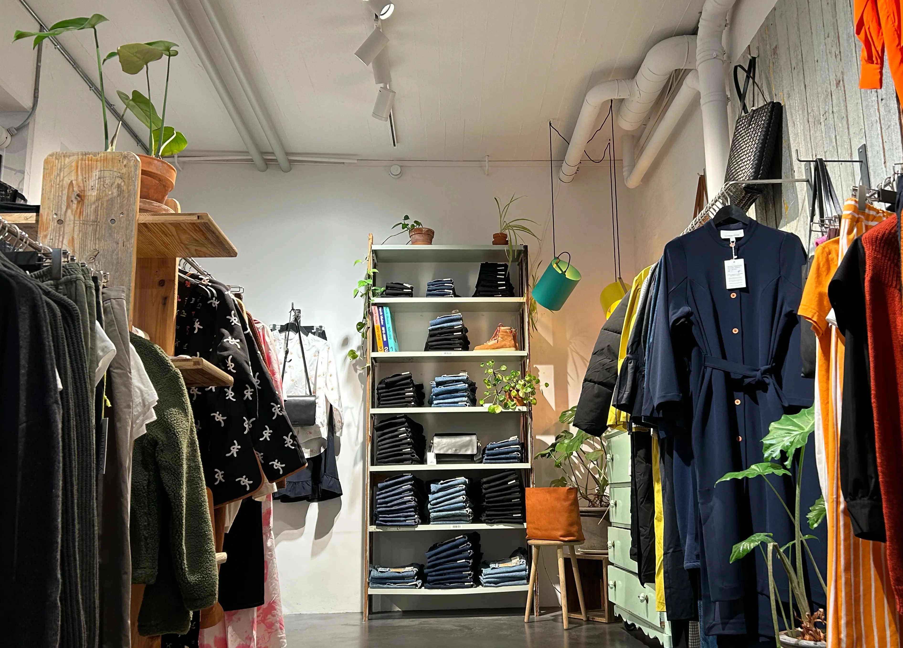
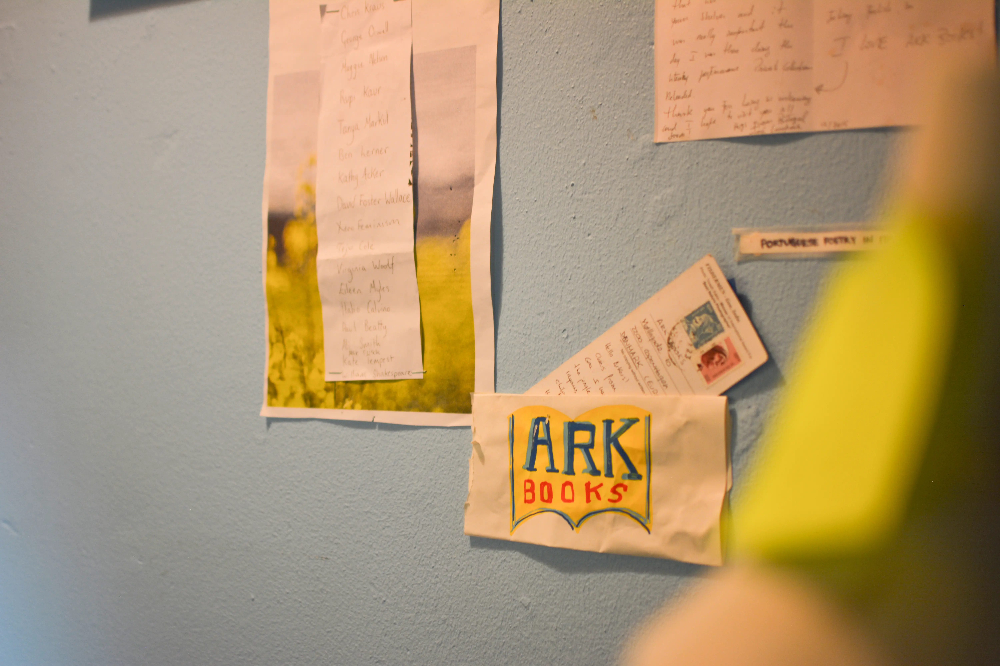
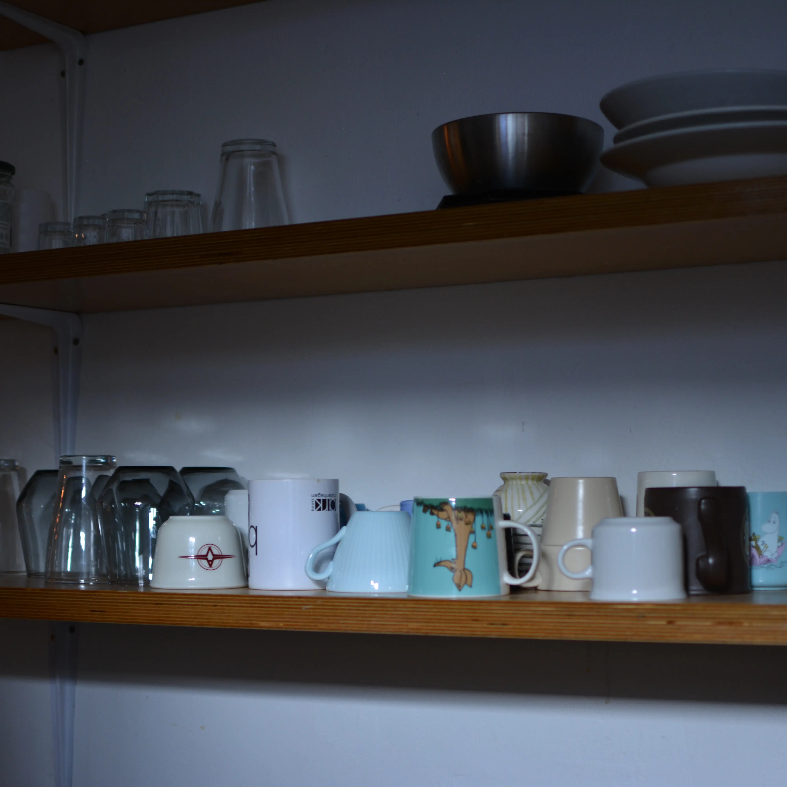

Galleri
I dette afsnit vises der fotos, taget under tema 5. Der er blandt andet fra ArkBooks, vores redesign virksomhed, og fra RES-RES, som var vores lille video og website opgave. Her på siden vises et grid, som displayer 6 forskellige billeder. Griddet er delt op i 5 kolonner og 5 rows, i forskellige forhold.





